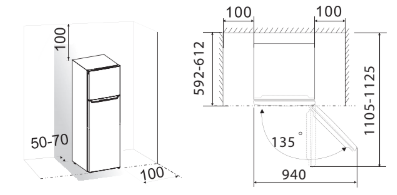
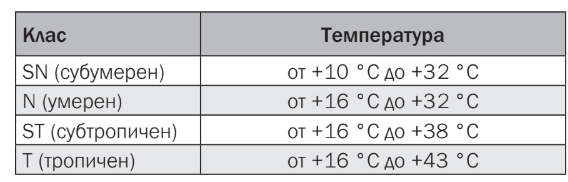
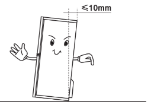
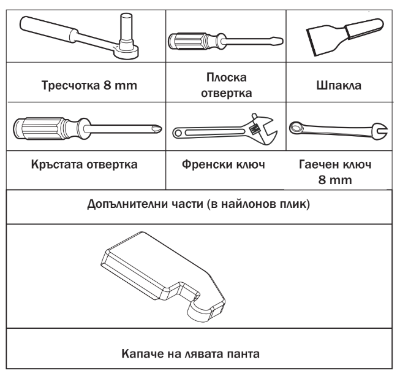
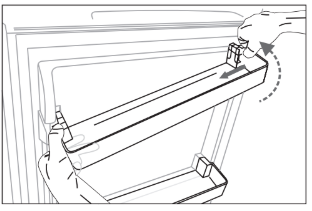
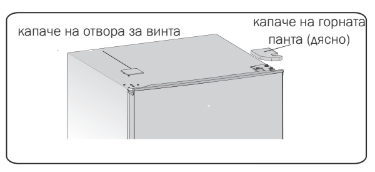
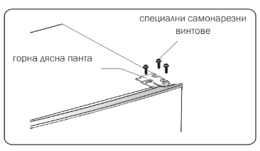
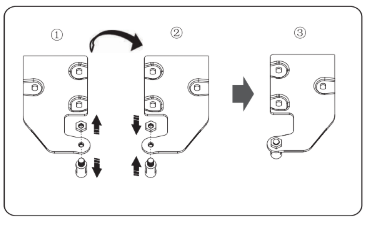
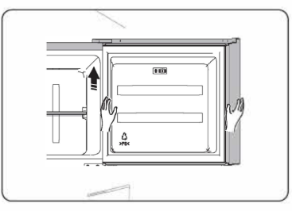
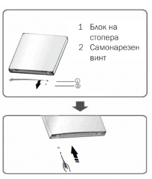

• Преди да използвате уреда за първи път, трябва да знаете следното:
Вентилация на уреда
За да се подобри ефективността на охлаждащата система и да се пести енергия, е
необходимо да се поддържа добра вентилация около уреда за разсейване на топлината.
Затова трябва да е налично достатъчно свободно пространство около хладилника.
Предложение: Препоръчително е да има разстояние 50-70 мм от гърба на уреда до стената,
поне 100 мм от горната повърхност на уреда, поне 100 мм от страните му до
стената и свободно пространство отпред, за да могат вратите да се отварят на 135°. Моля,
вижте следните диаграми

Забележка:
• Този уред работи добре в рамките на климатичен клас от N до ST. Той може да не работи
добре, ако бъде оставен на температура над или под посочения обхват за продължителен
период от време.

• Поставете уреда на сухо място, за да избегнете щети от влагата.
• Дръжте уреда далеч от директна слънчева светлина, дъжд или скреж. Дръжте уреда далеч
от източници на топлина като печки, огън или нагреватели.
Нивелиране на уреда
• За добро нивелиране и циркулиране на въздуха в долната задна част на уреда може да се
наложи да регулирате крачетата отдолу. Можете да го направите с пръсти или с подходящ
гаечен ключ.
• За да могат вратите да се затварят сами, наклонете горната част на уреда назад с около
10 мм.

СМЯНА НА ПОСОКАТА НА ОТВАРЯНЕ НА ВРАТАТА
Посоката, в която се отваря вратата, може да бъде сменена от дясната страна (както е
предоставен уредът) на лявата, ако мястото на инсталиране го изисква.
Предупреждение! Когато обръщате вратата, уредът не трябва да бъде свързан с
електрическата мрежа. Уверете се, че щепселът е изключен от електрическия контакт
Необходими инструменти.

Забележка: Ако е необходимо, можете да поставите хладилника на гърба му, за да получите
достъп до основата. Трябва да го оставите върху опаковката от мека пяна или подобен
материал, за да не повредите задната му част. За обръщане на вратата се препоръчва
следното:
1.Поставете хладилника в изправено положение. Отворете горната врата, за да свалите
всички рафтове от нея (за да избегнете повреда) и след това затворете вратата.
Свалете рафтовете от вратата

2.Използвайте шпакла или плоска отвертка, за да извадите капачето на отвора за винта
в горния ляв ъгъл на хладилника и капачето на горната панта в горния десен ъгъл на
хладилника.

3.Развийте специалните самонарезни винтове, използвани за закрепване на горната
панта, с тресчотка или гаечен ключ 8 mm (поддържайте горната врата с ръка, докато го
правите).

4.Извадете оста на горната панта, преместете я на противоположната страна и я затегнете,
след това я сложете на безопасно място.

5.Извадете горната врата от средната панта, като внимателно повдигнете вратата право
нагоре.
ЗАБЕЛЕЖКА: Когато изваждате вратата, внимавайте за шайби между централната панта и
долната част на горната врата, които може да са залепнали за вратата. Не ги губете.

6.Поставете горната врата на гладка повърхност с панела нагоре. Отвийте винта (2)
и частта (1), след това ги монтирайте от лявата страна и затегнете добре.

7.Развийте двата специални самонарезни винта, използвани за фиксиране на средната
панта, след това свалете средната панта, която поддържа долната врата.
ЗАБЕЛЕЖКА: Когато вадите вратата, внимавайте за шайби между долната панта и долната
част на долната врата, които може да са залепнали за вратата. Не ги губете.